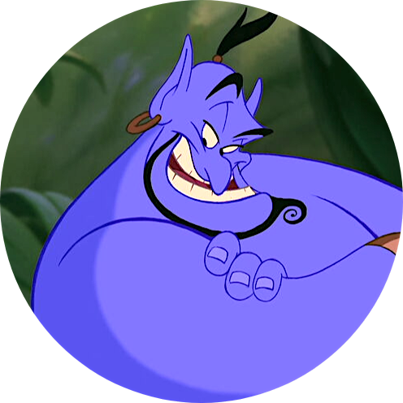

DreamTeam

Elena Baccoli
Valeria Guttilla

Attilio Trovato

Angelo Turco
Cosa hanno in comune Biancaneve e i sette nani e Ribelle: The Brave? E cosa, invece, accomuna Hercules con Lilli e il Vagabondo? La risposta, stranamente, è: molto più di quello che ci si aspetta. Che la Disney, con oltre 400 titoli originali, quasi 70 miliardi di dollari di fatturato nel 2019 e una piattaforma di streaming che, al momento del lancio, contava più di 50 milioni di iscritti, sia una delle più influenti compagnie di intrattenimento della storia è un fatto ben assodato. E chi potrebbe dire di non aver visto almeno un cartone animato della Disney da bambino? Probabilmente, nessuno. Le recenti acquisizioni di Marvel, Lucas Film e Fox (ma anche la meno recente fusione con la Pixar nel 2006) ne fanno senza dubbio una colonna portante dell’intrattenimento mondiale e, anche in Italia, il successo della Disney non conosce rallentamenti, come il recente lancio della piattaforma di streaming Disney + ha ampiamente dimostrato. Basta una piccola ricerca su Google trends, infatti, ad evidenziare un enorme picco di interesse per la compagnia e il suo nuovo prodotto in concomitanza con il lancio su territorio nazionale, avvenuto il 24 marzo 2020. Da Nord a Sud, il successo della piattaforma è stato uniforme in tutto lo stivale. Anche storicamente, la Disney ha accompagnato i bambini nella loro infanzia (e non solo loro) dagli anni Trenta del secolo scorso, senza quasi mai perdere un colpo. Il successo della Disney è sicuramente dovuto alle storie che racconta, ma come hanno fatto queste storie ad adattarsi così bene ai desideri del pubblico negli anni? Esiste la possibilità che anche gli elementi alla base di un cartone animato, come il linguaggio e i colori usati, si siano evoluti per adattarsi agli inevitabili cambiamenti della società in quasi novant’anni? E se sì, come?
Come spesso accade di questi tempi, una possibile soluzione al problema ci viene offerta dalla tecnologia e da alcune innovative tecniche di analisi del testo. Abbiamo, dunque pensato di far uso di una tecnica molto diffusa nel mondo dell'informatica applicata ai dati testuali per farci una prima idea del linguaggio usato dalla Disney e della sua evoluzione. Questa misura calcola tipicamente la frequenza di un termine in una collezione di documenti (nel nostro caso tutti i sottotitoli dei cartoni animati Disney) rapportata alla sua presenza all'interno di un testo specifico (nel nostro caso i singoli film) ma la sua applicazione nella forma base si è rivelata insufficiente. È stato necessario, quindi, misurare quanto i singoli termini fossero rappresentativi per ogni decade, andando a considerare il loro ‘valore informativo’ nel tempo.
Un risultato di questa prima analisi è visibile nel grafico a bolle, che descrive le dieci parole più rappresentative della Disney per epoca. Salta immediatamente all'occhio la presenza inaspettata del termine gay nelle decadi 1940 e 1950, ovviamente utilizzato in canzoni e dialoghi con l'accezione ‘felice’, ‘gaio’, ma il cui uso, per ovvi motivi, subisce nelle decadi successive un rovinoso declino. Durante gli anni Ottanta, decade non facile per i prodotti Disney, possiamo vedere dei termini che difficilmente assoceremmo a dei prodotti per famiglie: parole come catastrophe (‘catastrofe’), miserable (‘misero, infelice’), hopeless (‘disperato’) ci danno la misura di titoli atipici dell'universo Disney quali ‘Taron e la pentola magica’(1985) e ‘Red e Toby’(1981). Infine, è interessante osservare come nell'ultima decade, quella dal 2010 in poi, ‘connesso’ sia uno dei termini più rappresentativi, che richiama l'habitat digitale nel quale siamo sempre più immersi.
Un’ulteriore analisi su cui ci siamo concentrati è stata l'evoluzione nel corso degli anni di quarantadue parole significative nell'universo Disney. Risultano evidenti variazioni di significatività considerevoli di termini come pop (nelle decadi 1960, 1990), mama (1940, 1970), e silly (1980). Non sorprende che parole come ‘mamma’, ‘papà’, ‘figlio’ e ‘figlia’ ricorrano omogeneamente in tutte le decadi analizzate. È, invece, più interessante l'uso omogeneo anche del termine "car", che entra nel linguaggio Disney nel 1940 e rimane costante fino al 2010. Altri termini che si ritrovano un po’ ovunque nel tempo sono quelli che si riferiscono ai concetti di ‘regno’ e ‘maestà’, con ‘re’ e ‘regina’ che risultano essere, in linea con le tematiche fiabesche di molti cartoni, fra le più comuni. In generale, è quindi possibile tracciare i risultati ottenuti con un effettivo adeguamento del linguaggio dei film alle diverse epoche, un dato che rispecchia la potenza e la rappresentatività delle tecniche di estrazione dell'informazione che abbiamo applicato in questo lavoro.
È possibile osservare altri cambiamenti su base temporale con un’altra tecnica di analisi e estrazione di informazioni che si concentra sui temi trattati nel testo. Siamo riusciti a far emergere così, alcune delle tematiche che maggiormente vengono utilizzate nei film della Disney. Alcuni temi ricorrono spesso fra le decadi: ancora una volta il tema fiabesco (re e regine, castelli e foreste magiche) che spopola nelle prima decadi ma che rimane comunque presente (e di successo) fino ai giorni nostri. Ugualmente, temi che si avvicinano più all’avventura risultano essere ben distribuiti nella produzione. Uniche eccezioni sono i temi più legati alla tecnologia che, per motivi ovvi, si riscontrano più facilmente dagli anni 2000 in poi. Non sorprende, inoltre, trovare un legame fra i cartoni con protagonisti animali né riscontrare una tematica comune in quei film dall’ambientazione più esotica e naturalistica.
Un’ulteriore analitica ci ha permesso invece di andare ad esplorare la similarità fra film in modo automatico, partendo solo dal tipo di linguaggio utilizzato nei singoli cartoni. Il risultato è stato estremamente inaspettato, evidenziando come, nonostante differenze temporali di decenni, i film d’animazione della Disney risultino essere tutti molto simili fra loro. E così la storia di Merida di Brave risulta essere simile a quella di Biancaneve, con ben settantacinque anni di distanza, e il modo di raccontare la storia de La Principessa e il Ranocchio ha, vent’anni dopo, qualcosa in comune con la narrazione de La Sirenetta.
Anche l’utilizzo dei colori nel tempo mostra un andamento inaspettato. Chi non avrebbe dato per scontato che la palette di colori, forte del progresso tecnico ma anche di gusti moderni molto più ‘pop’, non avrebbe virato verso tinte più accese e sgargianti? E invece la Disney conferma di mantenere una sua linea ben precisa anche sul fronte della colorazione, mostrando un andamento regolare e un utilizzo pressoché omogeneo nel tempo di tutti i colori.
La produzione della Disney, però, non si limita ai film d’animazione ma comprende anche film in tecnica mista e live action. Uno dei confronti naturali nel corso dell’analisi è stato proprio fra queste tre tipologie, con particolare attenzione al linguaggio utilizzato. È possibile individuare caratteristiche di un linguaggio utilizzato da tutta la casa di produzione Disney, o esistono delle differenze interne fra queste tre categorie?
Nonostante la quasi indiscussa supremazia della Disney nel mondo dell’animazione, altre case di produzione hanno cercato di insediarsi in questo mercato, producendo, tra l’altro, molti cartoni animati ormai considerati cult. Compagnie quali la Dreamworks, casa del famosissimo Shrek e di tutti gli animali di Madagascar, la Universal, produttrice dell’iconica serie di film ‘Alla ricerca della valle incantata’ o la divisione d’animazione della Sony, che si è recentemente accaparrata l’Oscar 2019 con Spider-Man: un nuovo universo, si sono prepotentemente affermate come rivali del colosso di Topolino. Ma come hanno gestito l’eredità disneyana queste case nate quasi un cinquantennio dopo Walt Disney? Sono riuscite a trovare una particolarità che le rendesse facilmente distinguibili? Per rispondere a questa domanda, le prime cose che sembra opportuno esplorare sono proprio le storie e i temi trattati in queste storie. Un tipo di analisi diversa da quella utilizzata per i temi dell’animazione Disney, è stata usata per tutte le case di produzione e va ad evidenziare il trattamento di specifici ‘domini’ – macroaree o settori – all’interno dei testi e delle trame. Un primo risultato è prevedibilmente la ricorrenza di domini relativi al mondo animale e alla biologia, alle persone e alla psicologia e alla geografia. Altro dominio comune è quello della città e delle costruzioni, con la peculiare eccezione della Universal. La maggior parte della produzione dei film di questa casa tratta ambientazioni e personaggi legati agli animali e alla natura, mancando, dunque, il dominio della città. Risulta invece essere l’unica a presentare il dominio della geologia. Il tema della storia, invece, risulta essere più trasversale fra le case selezionate, comparendo nella Disney ma anche nella Dreamworks (produttrice de ‘La strada per Eldorado’ e ‘Il principe d’Egitto’), nella Warner (‘La spada magica: alla ricerca di Camelot’) e nella Sony.
Ritornando alla domanda iniziale, dunque, la risposta a cosa hanno in comune cartoni animati come Biancaneve e film d’animazione moderni come Brave è proprio il marchio Disney. L’evoluzione della Disney, infatti, risulta essere più una riconferma che una vera e propria evoluzione e l’analisi della produzione in chiave temporale mostra una somiglianza di fondo in tutti gli aspetti. Vediamo, dunque, come molte parole siano ricorrenti, come i temi vengano riproposti ciclicamente e addirittura i colori non mostrino significative modifiche nel tempo. E questo standard non rimane solo in casa Disney ma risulta essere qualcosa con cui anche le altre case di produzione devono necessariamente confrontarsi e, possibilmente, adeguarsi. Con davvero poche eccezioni, la Disney conferma di aver trovato il modo efficace di raccontare e continua, nel tempo, a dare al suo pubblico storie amate da sempre.
Elena Baccoli
Valeria Guttilla
Attilio Trovato
Angelo Turco